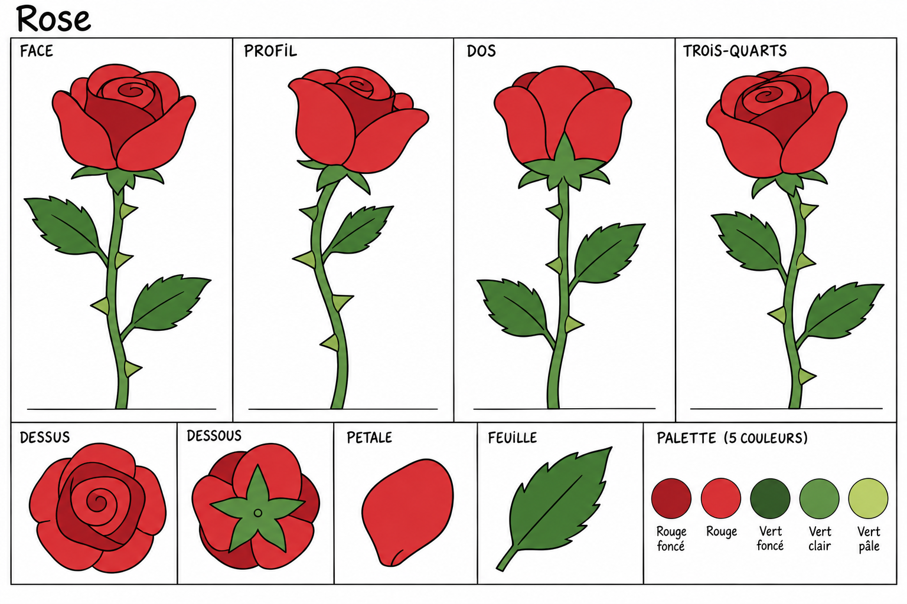
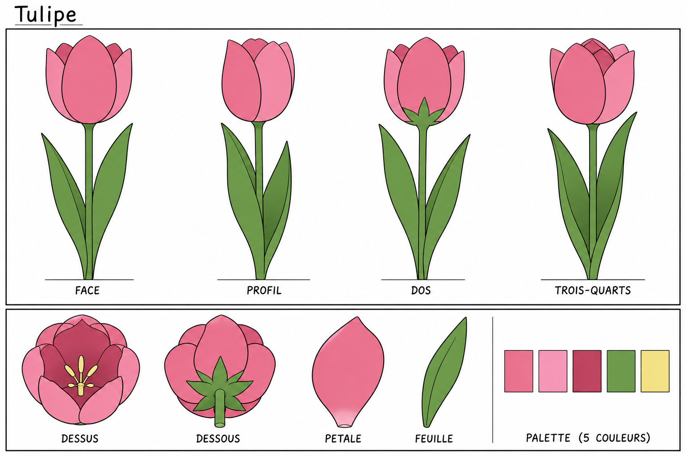
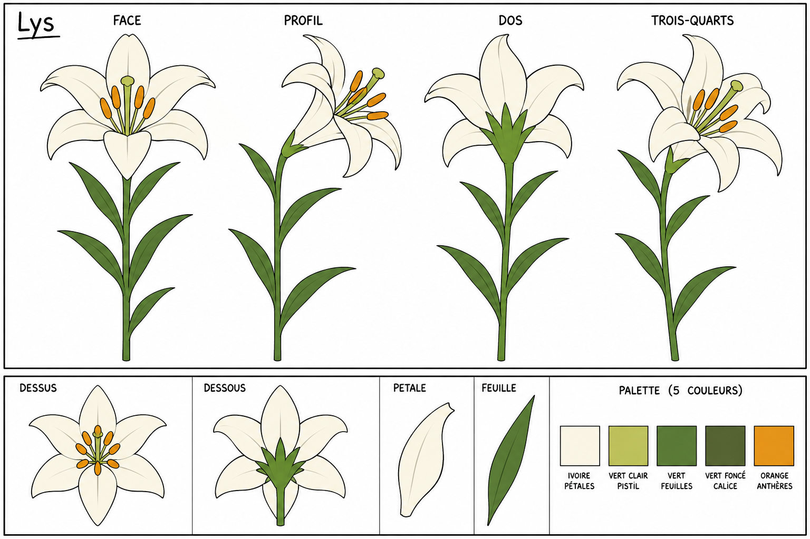
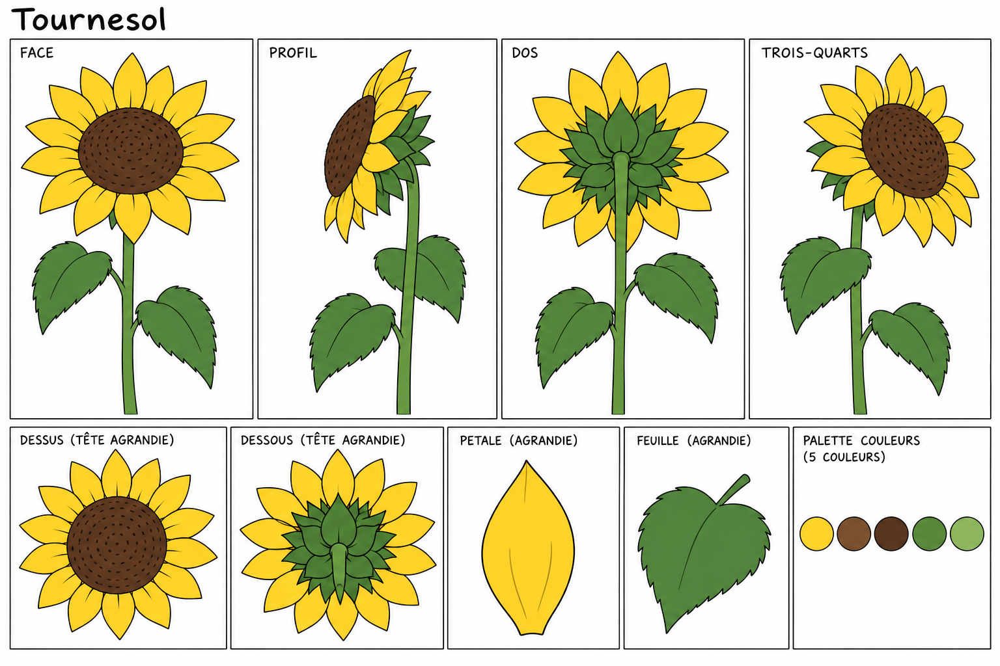
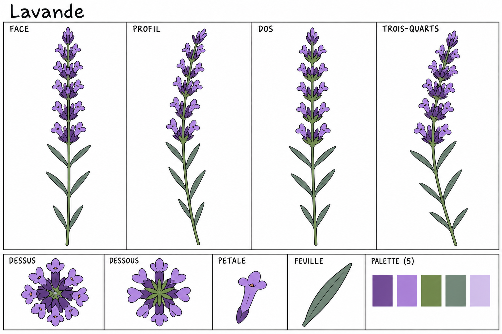
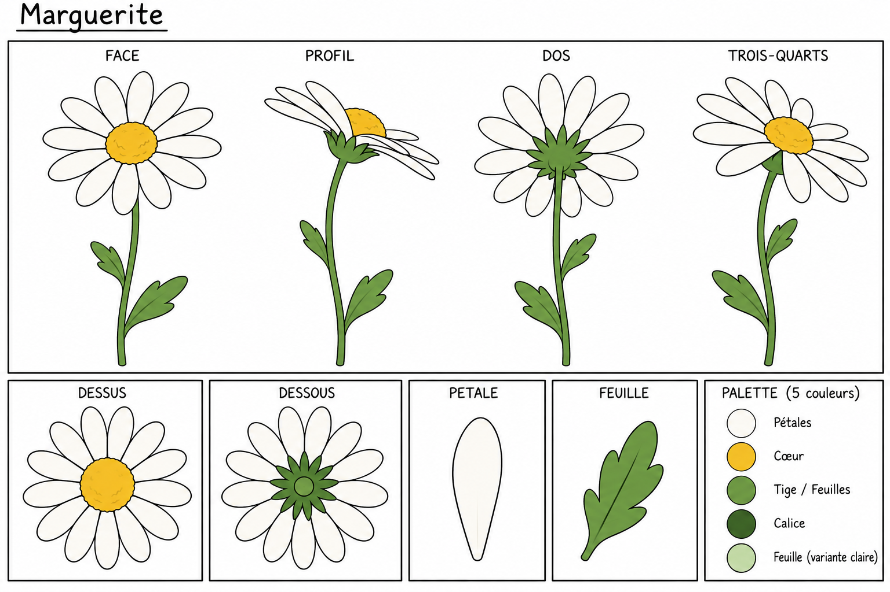
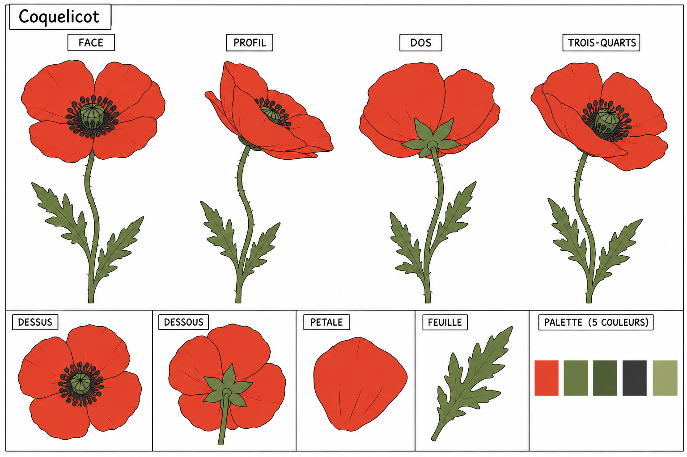
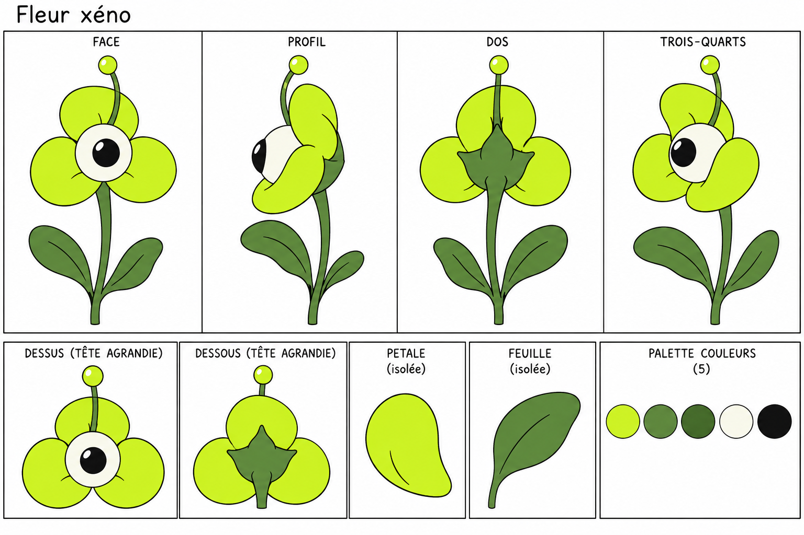
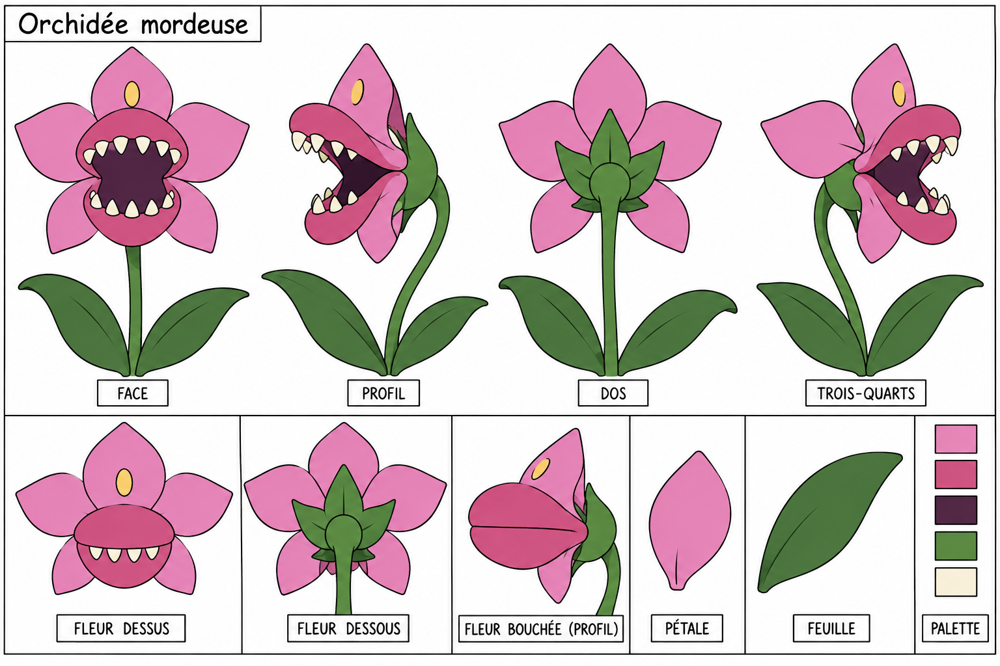
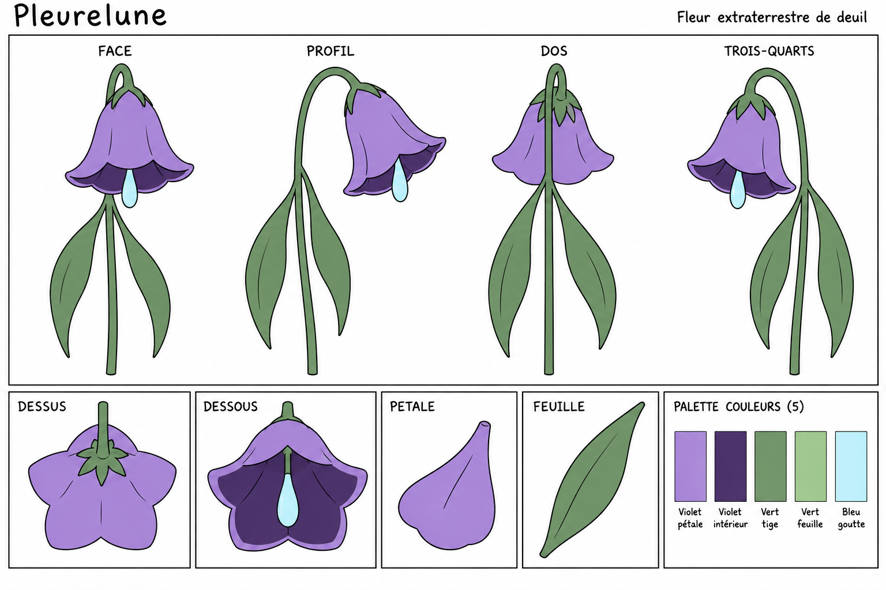

Références dessinées pour la modélisation 3D. Face, profil, dos, trois-quarts, détails du dessus et du dessous, pétales et feuilles. Les vues générées peuvent demander des ajustements de cohérence lors de la construction des volumes ; les nombres de pétales du brief restent la référence.









